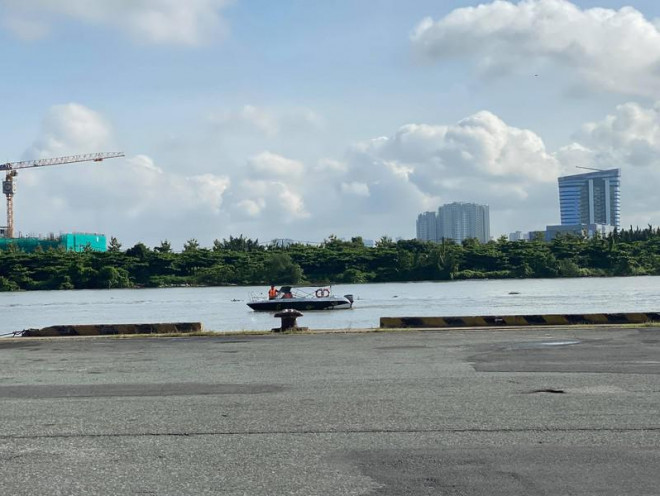

Đúng 8 giờ sáng nay đoàn tàu đầu tiên trong tuyến metro số 1 đã về tới cảng Khánh Hội cập cảng Khánh Hội (quận 4). Tàu biển vận chuyển tàu metro số 1 là Bayani dài 120 m. Trước đó, ngày 30-9, đoàn tàu này đã rời cảng Kasado (Nhật Bản) để về Việt Nam. Sau gần 10 ngày vượt đại dương, tàu metro số 1 đã chính thức cập cảng Khánh Hội và chuẩn bị làm thủ tục thông quan, sau đó được đưa về depot Long Bình, quận 9 (dự kiến ngày 10-10)
Đúng 8 giờ sáng nay đoàn tàu đầu tiên trong tuyến metro số 1 đã về tới cảng Khánh Hội cập cảng Khánh Hội (quận 4). Tàu biển vận chuyển tàu metro số 1 là Bayani dài 120 m.
Trước đó, ngày 30-9, đoàn tàu này đã rời cảng Kasado (Nhật Bản) để về Việt Nam. Sau gần 10 ngày vượt đại dương, tàu metro số 1 đã chính thức cập cảng Khánh Hội và chuẩn bị làm thủ tục thông quan, sau đó được đưa về depot Long Bình, quận 9 (dự kiến ngày 10-10)
Đoàn tàu về Việt Nam hôm nay là đoàn tàu có chiều cao toa xe lớn nhất so với các tàu metro khác ở Việt Nam, trong đó chiều cao toa xe từ đỉnh ray đến hệ thống điều hòa không khí lên tới 4080 mm. Bề rộng đoàn tàu dài gần 3 m.
Buồng lái được bố trí ở hai đầu của đoàn tàu có chiều rộng bằng chiều rộng toa xe và bố trí cửa thoát hiểm phía trước. Các công tắc trên bàn điều khiển được bố trí trong tầm tay người lái tàu. Bộ ghi dữ liệu đặt ở mỗi buồng lái được dùng để giám sát và ghi lại các dữ liệu về hoạt động của đoàn tàu (tốc độ, phương thức điều khiển…) hệ thống thông tin đoàn tàu.
Đã bấy lâu nay bác tới nhà.
Trẻ thời đi vắng, chợ thời xa.
Ao sâu nước cả, khôn chài cá,
Vườn rộng rào thưa, khó đuổi gà.
Cải chửa ra cây, cà mới nụ,
Bầu vừa rụng rốn, mướp đương hoa.
Đầu trò tiếp khách, trầu không có,
Bác đến chơi đây ta với ta

Nhấn vào đây để xem điều thú vị